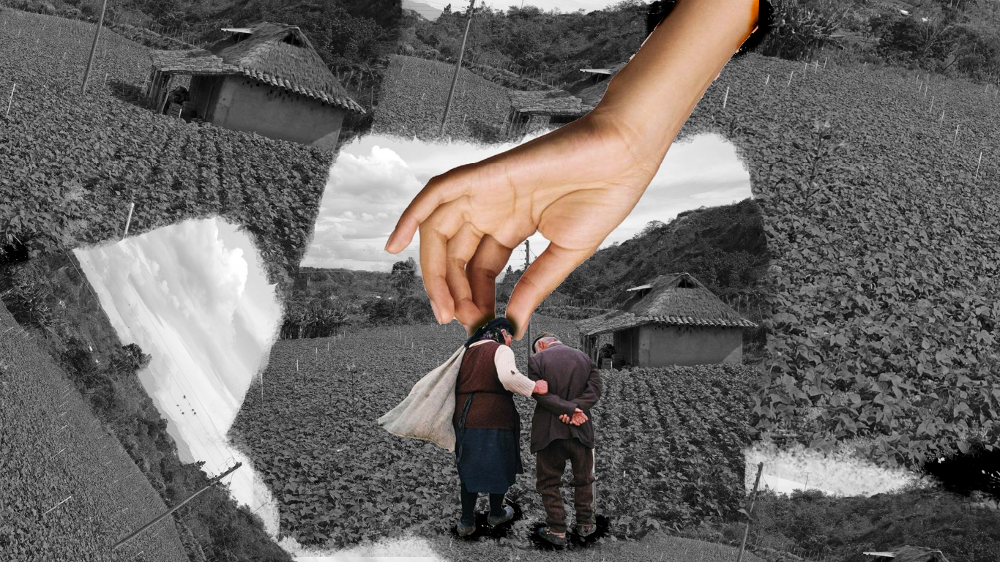
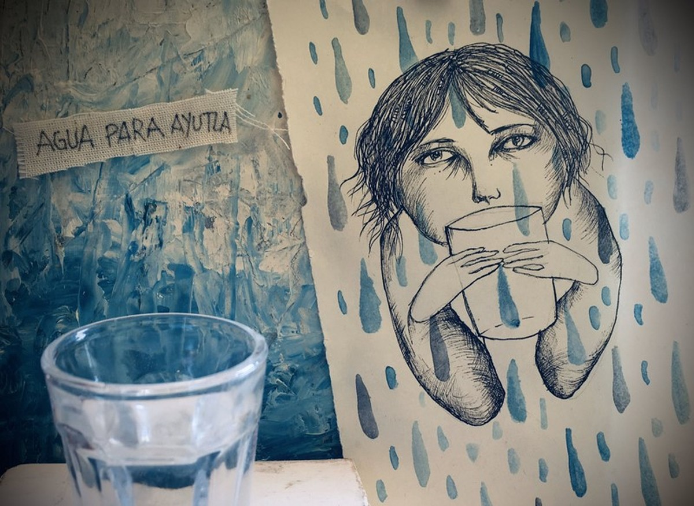
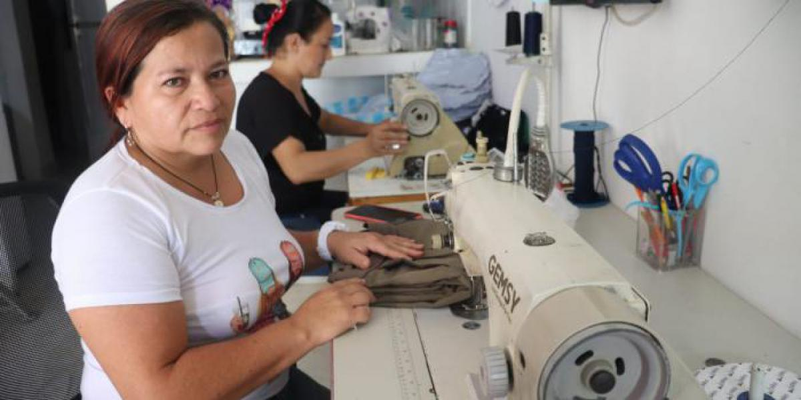
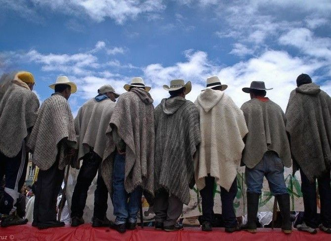

Un análisis ético sobre el reconocimiento de las víctimas en el Tolima, basado en el testimonio de Emilia Velásquez Pérez.

26 de agosto de 1991. Mientras el país celebraba una nueva Constitución, el horror de la masacre y la desaparición forzada condenaba a familias campesinas al exilio del duelo.
Exploramos la deuda ética que surge cuando el dolor ajeno es ignorado por la burocracia estatal.
La ética no nace del contrato, sino del encuentro con el Rostro. La vulnerabilidad del otro es un mandato ineludible de responsabilidad.
"El rostro del otro nos manda."

La negligencia institucional no es un error de gestión, es una violencia continuada. El Estado, al no reconocer, prolonga el crimen de la desaparición.
La paz verdadera exige una restitución de la dignidad en tres esferas clave para que la víctima vuelva a ser sujeto:

Su historia es el tránsito del dolor privado a la incidencia pública. De una espera de 17 años para denunciar, a liderar procesos de transformación en el Tolima.
A través de Subl&confe y la fundación Famdesvul, Emilia convirtió su indemnización en una semilla de dignidad para otros.

Empatía Económica y Gestión Social
Asumir una responsabilidad ética frente a las víctimas no es una opción política, es la génesis indispensable para cualquier futuro posible en Colombia.
Gracias por su atención e interpelación.